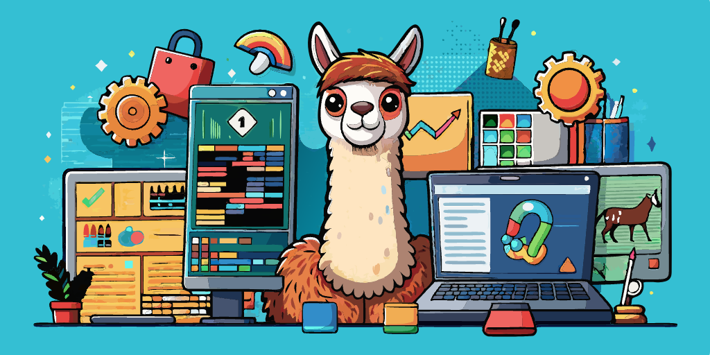

¿Qué son las bases de datos NoSQL y por qué incluso el creador de SQL las apoya?
El creador de SQL, Donald Chamberlin, ha dado su respaldo a las bases de datos NoSQL, una categoría diversa de bases de datos que ha surgido en los últimos años y que se separa de su propia creación exitosa.
Leer más

Meta ha lanzado Code Llama, un nuevo competidor para GitHub Copilot en el ámbito de la programación.
La inteligencia artificial (IA) está transformando la manera en que los programadores trabajan. De acuerdo con una encuesta de GitHub realizada en EE. UU., el 92% de los desarrolladores en ese país utilizan herramientas de codificación basadas en IA, y es probable que esta tendencia se extienda globalmente.
Leer más